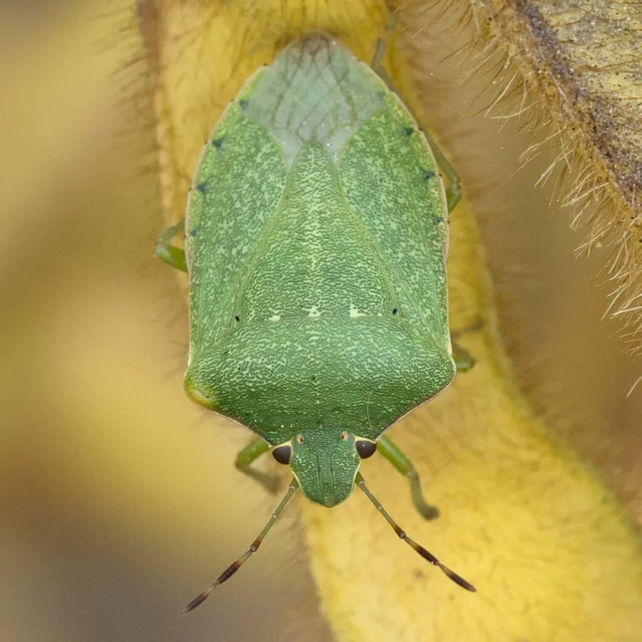

昆虫 · 动物界
绿蝽 Nezara viridula

通体翠绿、体形似盾的常见蝽，吸食豆类和水稻等作物汁液，受惊时释放臭味，是世界性的农业害虫。
- 分类
- 门节肢动物门纲昆虫纲目半翅目科蝽科属绿蝽属
- 栖息环境
- 稻田、豆田和菜地，以及田边杂草和灌木
- 地理分布
- 世界性分布，中国南北各地均有发生
- 保护级别
- 暂无评估
物种志
绿蝽成虫体长 12–16 mm，体呈鲜绿至黄绿色，体背扁平、盾形，密布细小刻点。触角 5 节，末端两节颜色较深；小盾片呈三角形，末端常带浅黄色斑块。若虫体色变化很大，可从灰黑、橙红到绿色，腹部有黑色斑点。
绿蝽是世界性分布的害虫，中国南方和北方均有发生，寄主包括水稻、大豆、菜豆、番茄、棉花和柑橘等。它的世代数随纬度而变：南方一年发生 3–4 代，北方一年 1 代，以成虫在杂草、树皮和建筑物缝隙中越冬。成虫和若虫刺吸嫩茎、花蕾和豆荚的汁液，造成落花落荚、籽粒干瘪，水稻受害后出现大量空秕粒。受惊时它从臭腺释放难闻的液体。防治上可利用卵寄生蜂等天敌，并在若虫期适时用药。
形态与习性
- 食性刺吸水稻、大豆、菜豆、番茄和柑橘等植物汁液
- 体长成虫 12–16 mm
- 世代南方一年 3–4 代，北方一年 1 代
- 越冬以成虫在杂草、树皮和建筑物缝隙中越冬
- 危害落花落荚、籽粒干瘪，水稻出现空秕粒
- 防御受惊时从腹部臭腺释放难闻液体
趣味知识
- 绿蝽的若虫体色变化很大，同一批卵孵出的个体可能颜色完全不同。
- 它吸食水稻造成的空秕粒，是南方稻区减产的重要原因之一。
- 绿蝽被列入世界百种最具入侵性的外来物种之一。